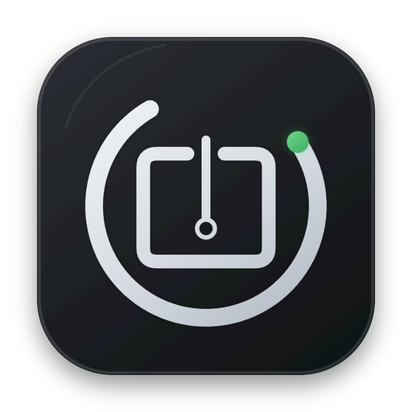
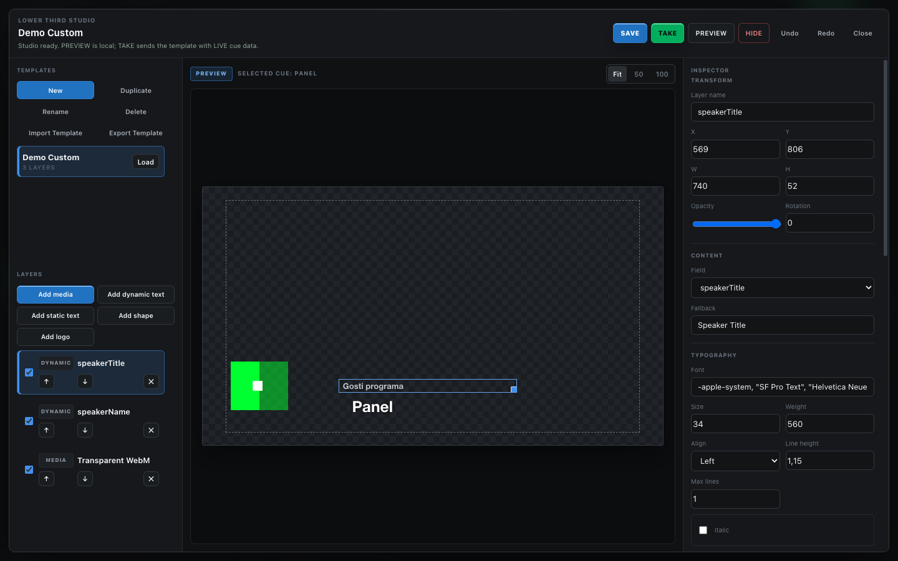
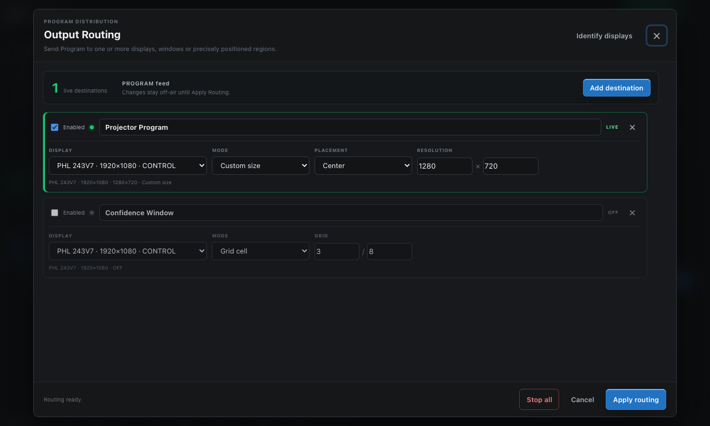

Rundown and GO
Clear selected, NEXT and LIVE states with planned duration, notes, actual timing and safe GO progression.

ProTimer Studio BetaFree and open source
Run the rundown, speaker timer, lower thirds and every event screen from one local app.
Built for the show site
Prepare NEXT without changing LIVE, keep Program visible, route it to several destinations and give speakers, crew and stream operators the views they need. The core workflow stays on your computer and production LAN.
Core workflows
Clear selected, NEXT and LIVE states with planned duration, notes, actual timing and safe GO progression.
Countdown, stopwatch and clock modes with warning colors, overtime, messages, chimes and Signal Light.
Build reusable 16:9 templates from cue fields, text, shapes, logos, images and muted video.
Take images, video, PDF pages, text, logos, timers or a blank state to Program.
Send Program to fullscreen displays, normal windows, exact pixel regions or grid cells at the same time.
Phone remote, backstage, browser output, HTTP, OSC, autosave, portable show files and post-show reports.
Real product screens


Public beta downloads
DMG for M-series Macs. The beta is ad-hoc signed but not Apple notarized, so first launch requires macOS Privacy & Security approval.
Download DMGInstaller and portable versions for Windows 10/11 x64. SmartScreen may warn because Authenticode signing is not yet available.
SHA256SUMS.txt. Download only from the official GitHub repository.
Why public beta
Try it off-air, then tell us what was unclear, what failed and what would save time on a real show. Display setup and reproducible steps matter more than a generic “doesn't work”.
Before you download
Yes. The MIT License permits use, modification and redistribution. There is no account, subscription, trial limit or output watermark.
No for the core app. Phone, backstage, Signal Light and browser views use your local production network. Optional public sharing needs internet.
The public beta is not yet Developer ID notarized or Windows Authenticode signed. Confirm the GitHub source and SHA-256 before overriding a warning.
No. It is a software-first option for event teams. Dedicated hardware still wins where physical redundancy is essential, and ProTimer Studio is not a video switcher or full media server.
Srpski interfejs
ProTimer Studio spaja rundown, stage timer, poruke govorniku, potpise i više izlaza. Program je besplatan, bez naloga i bez trial watermarka. U aplikaciji izaberite Serbian FULL, a za prvi show pratite kratko uputstvo.